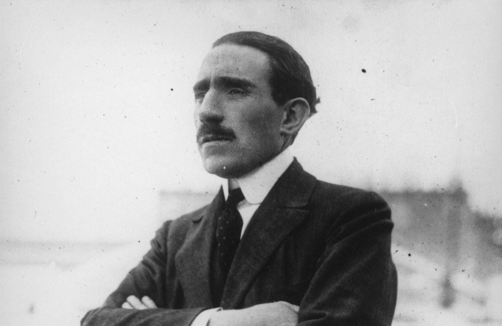
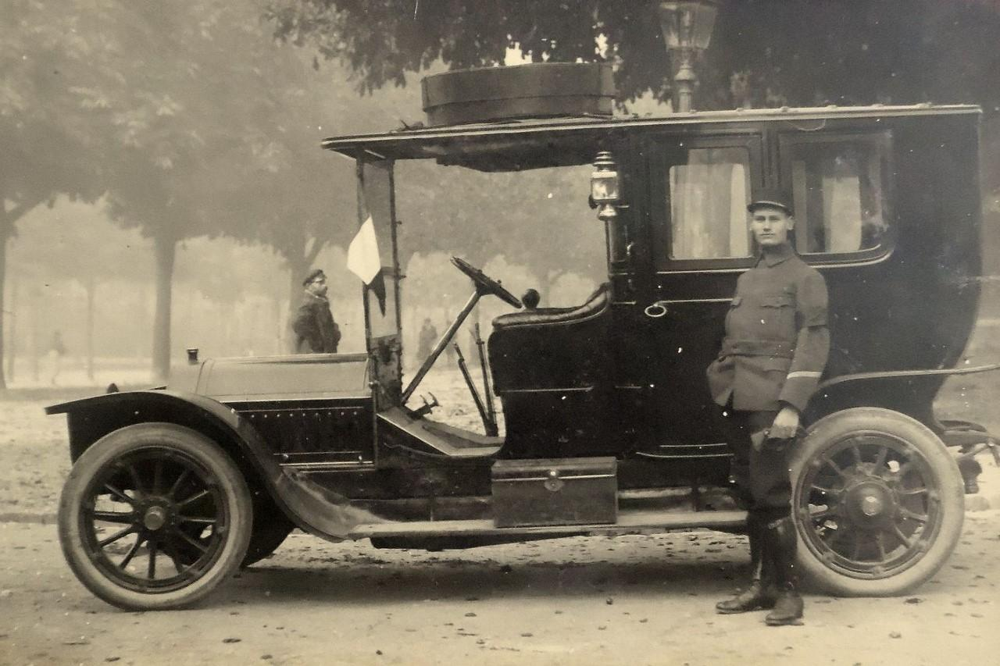
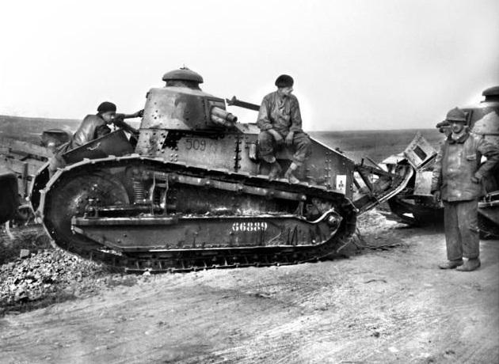
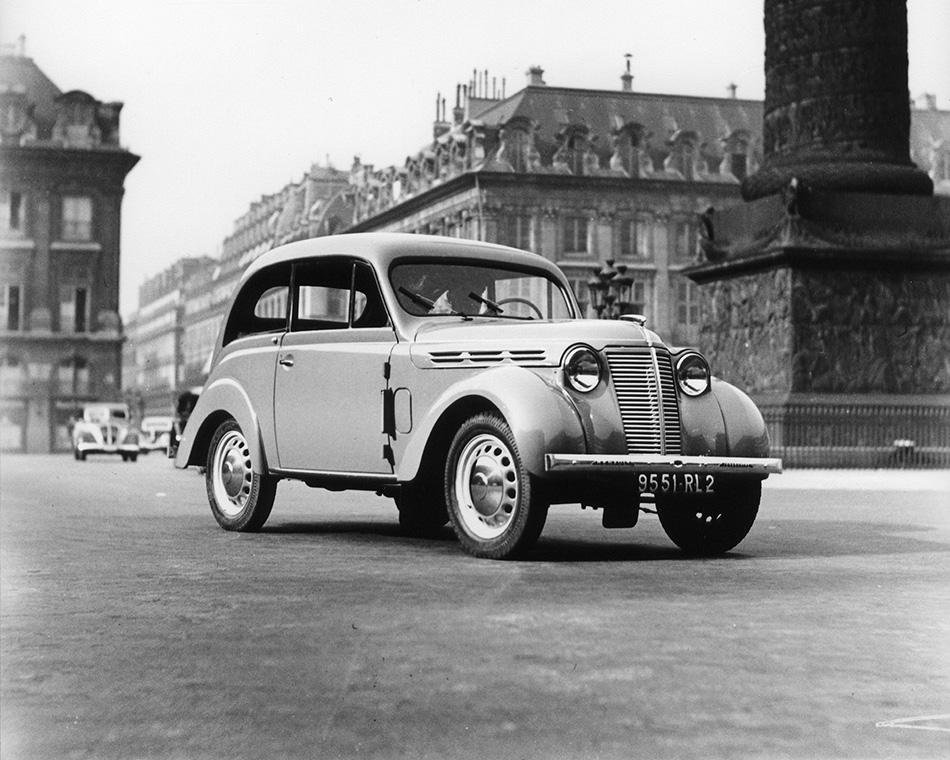
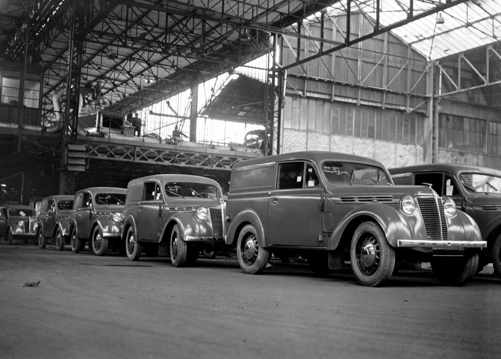
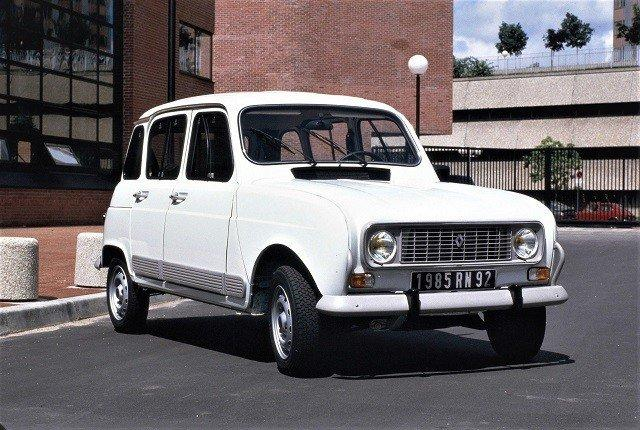
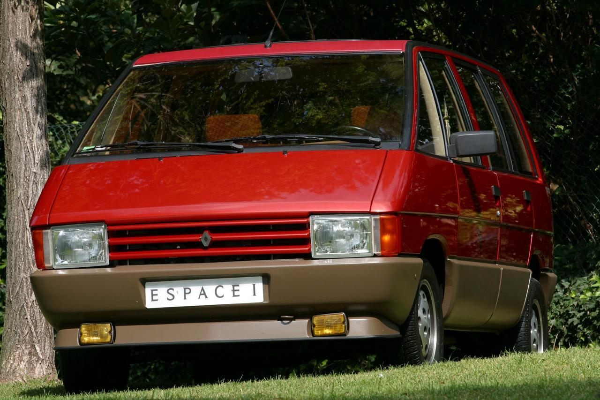
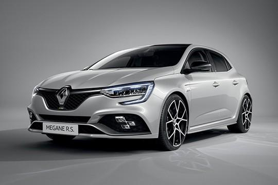
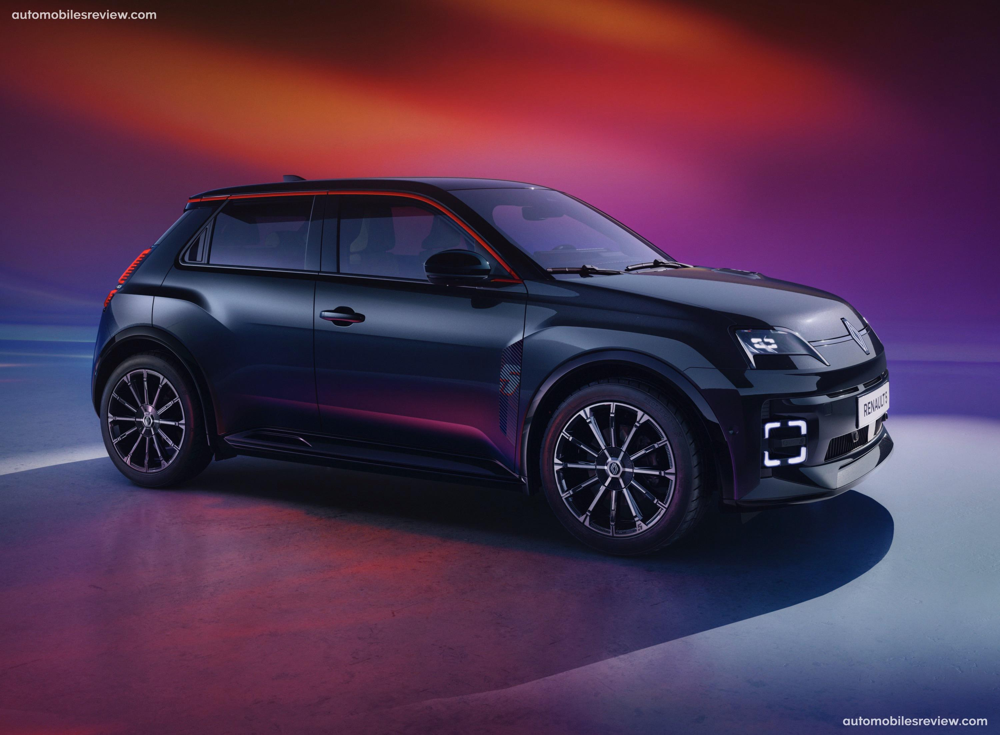
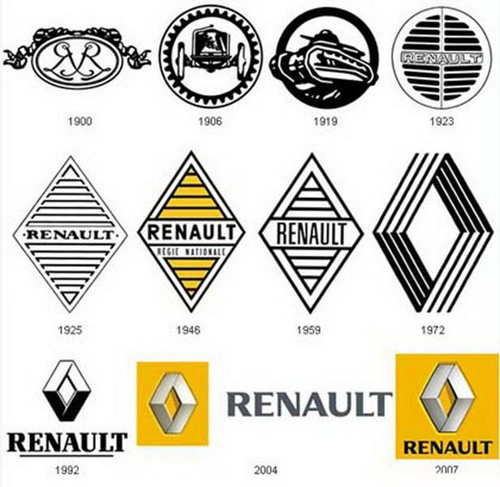

En 1898, Louis Renault construit sa première voiture, la Renault Voiturette Type A. Le 25 février 1899, avec ses frères Marcel et Fernand, il fonde Renault Frères à Boulogne-Billancourt. Les premières voitures séduisent rapidement grâce à leur innovation et leur fiabilité.

Au début du XXᵉ siècle, Renault devient l'un des plus grands constructeurs automobiles français. La marque produit des voitures de tourisme, des taxis, des camions et participe à de nombreuses courses automobiles. Les célèbres taxis Renault deviennent un symbole de Paris.

Pendant la Première Guerre mondiale, les Taxis de la Marne transportent des soldats français vers le front en 1914. Renault fabrique également des camions, des moteurs d'avion, des obus et le célèbre char Renault FT, considéré comme l'un des meilleurs chars de son époque.

Après la guerre, Renault poursuit son développement en fabriquant des voitures, des camions, des autobus et des moteurs industriels. Des modèles comme la Primaquatre et la Juvaquatre rencontrent un grand succès en France.

Pendant la Seconde Guerre mondiale, les usines Renault sont réquisitionnées par l'Allemagne. Elles sont ensuite bombardées par les Alliés. En 1945, après la guerre et le décès de Louis Renault, l'entreprise est nationalisée et devient la Régie Nationale des Usines Renault.

Cette période marque une forte croissance pour Renault. Les modèles les plus célèbres sont :

Dans les années 1980 et 1990, Renault développe sa présence dans le monde entier. La Clio, lancée en 1990, devient un immense succès. Renault connaît également de nombreuses victoires en Formule 1, notamment comme motoriste. En 1999, Renault forme une alliance avec Nissan, qui deviendra l'une des plus importantes du secteur.

Au XXIᵉ siècle, Renault investit dans les véhicules électriques. Parmi les modèles importants :

Aujourd'hui, Renault poursuit sa transition vers les véhicules électriques. Les modèles récents comprennent :
Le groupe possède également les marques Alpine, Dacia et Mobilize. Renault continue d'investir dans l'électrification, les logiciels et les nouvelles technologies.

